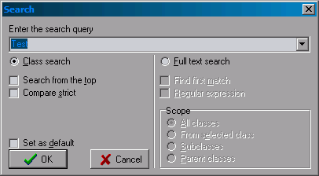

Search

Class search
This will search the currently selected tree for classes that match your query.If "strict" is turned on only classes that match the exact query will be searched.
Full text search search
This will search the source code of classes for you query.If "first match" is checked the search will stop when on class has been found that matches your query.
You can use regular experssions as query, for this you have to turn on the "regular experssion" switch.
The "scope" option controlls witch classes will be searched.